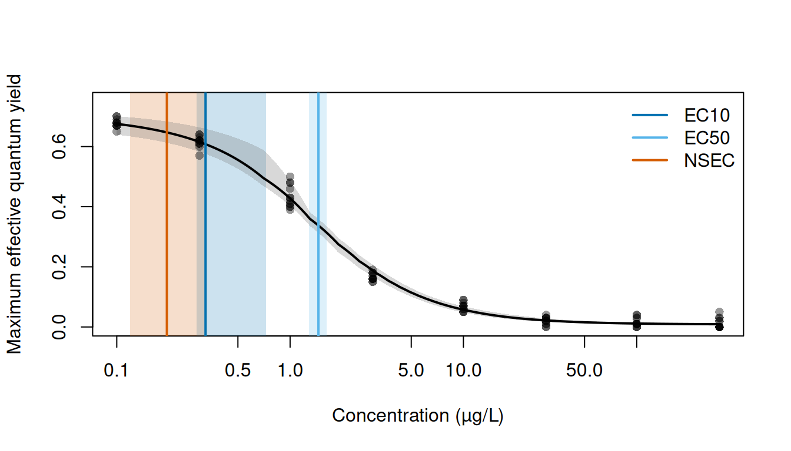
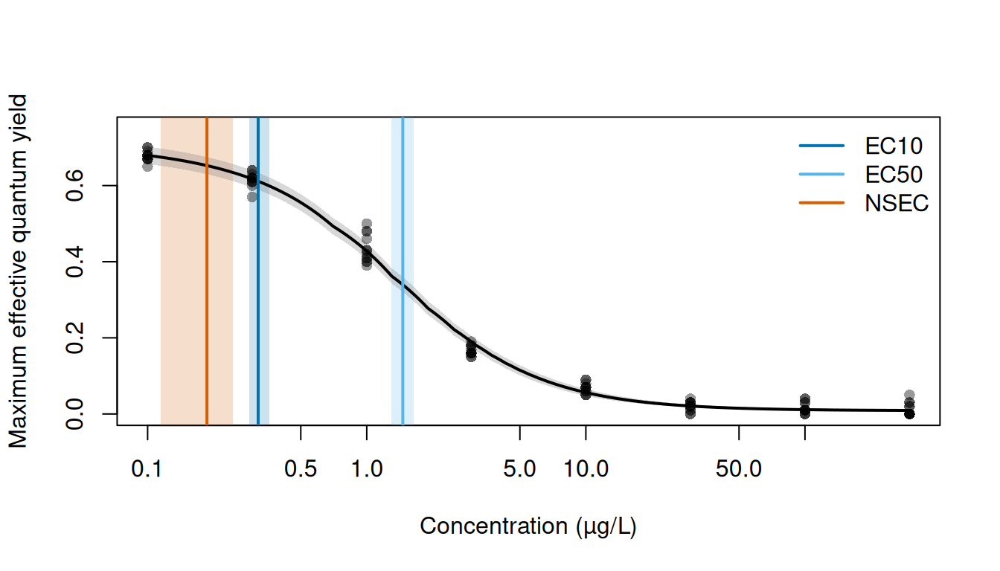
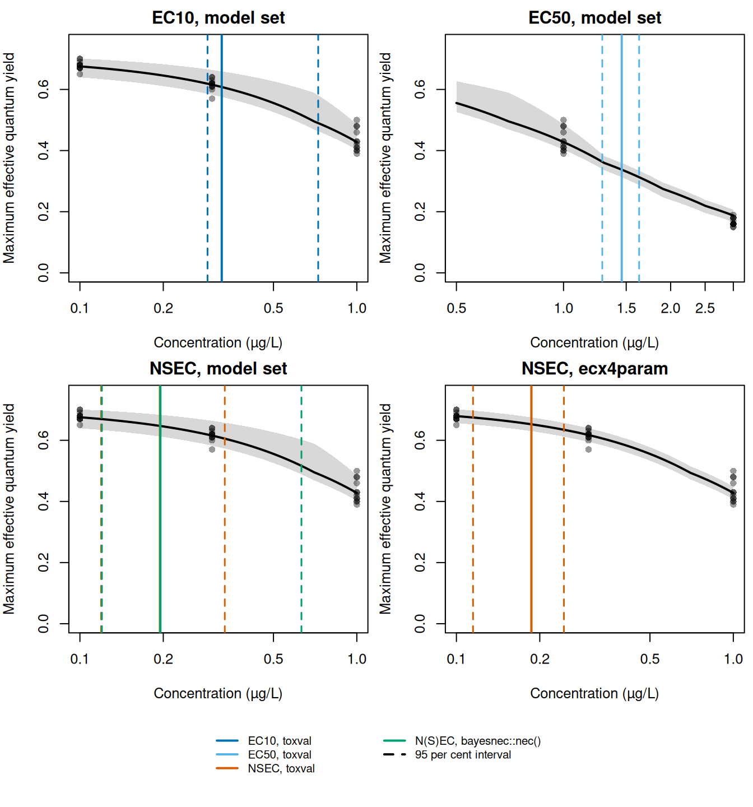

Here we apply toxval’s ecx() and nsec() to the two kinds of object returned by bnec() in the bayesnec package: a fit of a single equation (class bayesnecfit), and a model set that weights several equations and averages them (class bayesmanecfit). The example is the ametryn series of bayesnec::herbicide, to which we fitted the decline set of bayesnec equations. The single fit is one equation taken from this set (ecx4param). Because bayesnec computes the ECx and the NSEC itself, we also compare the estimates with those returned by its own ecx(), nsec() and nec(), and identify the settings under which the two packages give the same values. The definitions of the ECx and the NSEC used by toxval are given in the vignettes on the ECx and the NSEC.
Because bayesnec also exports functions named ecx() and nsec(), whichever package is attached later masks the functions of the other when both are attached. We therefore do not attach bayesnec, and call its functions as bayesnec::ecx() and bayesnec::nsec().
The data and the fitted models
The response is the maximum effective quantum yield of the symbiotic dinoflagellates of the coral Seriatopora hystrix, measured after 10 hours’ exposure to the herbicide ametryn in the experiment of Jones and Kerswell (2003), which Fisher et al. (2024) describe as it applies to these data. The columns are documented in ?bayesnec::herbicide.
The series contains 96 observations at 8 concentrations, from 0.1 to 300 µg/L, with each concentration about three times the one below it, and the model is fitted on log(concentration). The control is recorded as 0 in the source data. However, the script that builds the dataset in the bayesnec source repository (data-raw/herbicide_data.R) sets it to 0.1, so the control is the lowest concentration in the series.
We fitted the model set once (in the script data-raw/vignette_fits_bayesnec.R) with the call below:
stored <- readRDS(file.path("fits", "bayesnec_ametryn_decline.rds"))
settings <- stored$provenance$settings
ametryn_set <- stored$fit
ametryn_single <- suppressMessages(
bayesnec::pull_out(ametryn_set, model = "ecx4param")
)
class(ametryn_set)
#> [1] "bayesmanecfit" "bnecfit"
class(ametryn_single)
#> [1] "bayesnecfit" "bnecfit"Each equation was sampled with 4 chains of 10000 iterations (8000 of them warmup) using rstan, the default backend of brms. With thin = 4 only one in four post-warmup draws is kept, so the stored file contains a quarter of them.
weights <- ametryn_set$mod_stats[, c("model", "wi")]
weights <- weights[order(weights$wi, decreasing = TRUE), ]
knitr::kable(
weights,
digits = 3,
row.names = FALSE,
col.names = c("equation", "weight")
)| equation | weight |
|---|---|
| ecx4param | 0.310 |
| ecxll4 | 0.307 |
| ecxll5 | 0.218 |
| ecxwb2 | 0.083 |
| nec4param | 0.031 |
| nec3param | 0.024 |
| ecxwb1 | 0.015 |
| ecxwb2p3 | 0.011 |
| ecxll3 | 0.000 |
| ecxexp | 0.000 |
| ecxwb1p3 | 0.000 |
We fitted 11 equations of the decline set, each with 2000 retained draws, and all of them pass bayesnec::check_sampling() at its default thresholds. The largest weights are those of ecx4param (0.310) and ecxll4 (0.307), whereas the equations that include a nec parameter (nec4param and nec3param) have a combined weight of 0.055.
toxval_predict() evaluates each realisation of the model set over the range of concentrations in the data. For a bayesmanecfit the realisations are the draws that bayesnec keeps from each equation in proportion to its weight, and these are also the draws used by the estimates and plots of bayesnec. We make the prediction once and pass it to both ecx() and nsec(), so that the curves are not evaluated again for each call.
pred_set <- toxval_predict(ametryn_set)
table(pred_set$meta$draw_model)
#>
#> ecx4param ecxll4 ecxll5 ecxwb1 ecxwb2 ecxwb2p3 nec3param nec4param
#> 619 614 437 30 167 23 48 62The averaged curve has 2000 realisations, each drawn from a single equation.

The mean response is close to 0.68 at the control and declines to 0.013 at 300 µg/L, with 82 per cent of this decline occurring between 0.3 and 10 µg/L (Figure 1). At each concentration the median curve is within 0.021 of the observed mean, and the largest departure is at 3 µg/L.
The estimates marked in Figure 1 are the model-set estimates given under A model set. The EC10 interval is asymmetric, extending 11 times as far above the median as below it (to 0.725 µg/L), and its lower part overlaps the NSEC interval, which ends at 0.334 µg/L.
A single-equation fit
We took ecx4param, the equation with the highest weight in the set, from the model set as a single fit with bayesnec::pull_out(). We then requested the EC10 and EC50 from ecx() and the NSEC from nsec(), at their defaults (type = "absolute" and sig_val = 0.01).
single_ecx <- ecx(ametryn_single, proportion = c(0.1, 0.5))
single_ecx
#> # A tibble: 4 × 10
#> # Model: bayesnecfit
#> # Settings: resolution 500 | 2000 posterior draws
#> metric direction estimate conf.low conf.high proportion type control
#> <chr> <chr> <dbl> <dbl> <dbl> <dbl> <chr> <dbl>
#> 1 ecx decreasing 0.320 0.292 0.359 0.1 absolute 0.679
#> 2 ecx increasing NA NA NA 0.1 absolute 0.679
#> 3 ecx decreasing 1.46 1.29 1.64 0.5 absolute 0.679
#> 4 ecx increasing NA NA NA 0.5 absolute 0.679
#> # ℹ 2 more variables: reference <dbl>, asymptote <dbl>
single_nsec <- nsec(ametryn_single)
single_nsec
#> # A tibble: 2 × 14
#> # Model: bayesnecfit
#> # Settings: resolution 500 | 2000 posterior draws
#> metric direction estimate conf.low conf.high sig_val type anchor control
#> <chr> <chr> <dbl> <dbl> <dbl> <dbl> <chr> <chr> <dbl>
#> 1 nsec decreasing 0.187 0.115 0.244 0.01 absolute model 0.679
#> 2 nsec increasing NA NA NA 0.01 absolute model 0.679
#> # ℹ 5 more variables: reference <dbl>, asymptote <dbl>, ecnsec <dbl>,
#> # ecnsec.low <dbl>, ecnsec.high <dbl>The decreasing EC10 is 0.320 [0.292, 0.359] µg/L and the decreasing EC50 1.461 [1.291, 1.638] µg/L (medians with 95 per cent credible intervals). Both are measured from a control of 0.679 (i.e. the median predicted response at the lowest concentration in the data, 0.1 µg/L), which is the default of x_control. The decreasing NSEC, the concentration at which each realisation of the curve falls below the reference (0.652, the 0.01 quantile of the control realisations), is 0.187 [0.115, 0.244] µg/L. The ecnsec column gives the effect at the NSEC as a proportion of the control (0.039 at the median, i.e. a decline of 3.9 per cent). Each column of the result, and the default that sets it, is described in the brms case study.

ecx4param curve (black line) and its 95 per cent credible band (grey). Vertical lines mark the medians of the decreasing EC10 (dark blue), EC50 (light blue) and NSEC (vermillion) of ecx4param, and the shaded bands of the same colours their 95 per cent credible intervals. Concentration is on a log scale.
For ecx4param the NSEC interval ends at 0.244 µg/L, below the lower limit of the EC10 interval (0.292 µg/L; Figure 2), whereas for the model set the NSEC and EC10 intervals overlap (Figure 1). The EC10 interval of ecx4param is also narrower, at 0.067 µg/L compared with 0.436 µg/L for the model set.
The estimates for the increasing direction are NA, because no realisation of this declining curve rises to its increasing reference within the range of the data. toxval returns both directions for each curve.
A model set
For the model set we pass the prediction made above (pred_set) to ecx() and nsec().
set_ecx <- ecx(pred_set, proportion = c(0.1, 0.5))
set_ecx
#> # A tibble: 4 × 10
#> # Model: bayesmanecfit
#> # Settings: resolution 500 | 2000 posterior draws
#> metric direction estimate conf.low conf.high proportion type control
#> <chr> <chr> <dbl> <dbl> <dbl> <dbl> <chr> <dbl>
#> 1 ecx decreasing 0.325 0.289 0.725 0.1 absolute 0.675
#> 2 ecx increasing NA NA NA 0.1 absolute 0.675
#> 3 ecx decreasing 1.46 1.28 1.63 0.5 absolute 0.675
#> 4 ecx increasing NA NA NA 0.5 absolute 0.675
#> # ℹ 2 more variables: reference <dbl>, asymptote <dbl>
set_nsec <- nsec(pred_set)
set_nsec
#> # A tibble: 2 × 14
#> # Model: bayesmanecfit
#> # Settings: resolution 500 | 2000 posterior draws
#> metric direction estimate conf.low conf.high sig_val type anchor control
#> <chr> <chr> <dbl> <dbl> <dbl> <dbl> <chr> <chr> <dbl>
#> 1 nsec decreasing 0.195 0.119 0.334 0.01 absolute compon… 0.675
#> 2 nsec increasing NA NA NA 0.01 absolute compon… 0.675
#> # ℹ 5 more variables: reference <dbl>, asymptote <dbl>, ecnsec <dbl>,
#> # ecnsec.low <dbl>, ecnsec.high <dbl>The model-averaged decreasing EC10 is 0.325 [0.289, 0.725] µg/L, the EC50 1.457 [1.285, 1.631] µg/L and the NSEC 0.195 [0.119, 0.334] µg/L. Because the ECx of each realisation is measured from its own control, the ECx of the model set is a weighted mixture of the ECx realisations of the individual equations. For the NSEC of a bayesmanecfit, nsec() by default (anchor = "component") takes the reference of each equation from that equation’s own control (i.e. the 0.01 quantile of its control over all 2000 draws of its fit). The reference column gives the median of these references across the 2000 realisations (0.652), and the effect at the median NSEC is 4.1 per cent.
The NSEC reference under model averaging
For a model-averaged fit, the source of the NSEC reference is set by the anchor argument of nsec(), described in the NSEC vignette. The default for a bayesmanecfit, used above, is anchor = "component", which takes the reference of each equation from that equation’s own control over all draws of its fit, as bayesnec::nsec() does. In contrast, anchor = "model" takes a single reference for the whole set from the pooled control realisations of the averaged curve. The realisations of each equation are then compared with this reference, and the NSEC is summarised over all of them.
p_nsec <- decreasing(nsec(pred_set, anchor = "model"))
p_nsec[, c("estimate", "conf.low", "conf.high", "reference", "anchor")]
#> # A tibble: 1 × 5
#> # Model: bayesmanecfit
#> # Settings: resolution 500 | 2000 posterior draws
#> estimate conf.low conf.high reference anchor
#> <dbl> <dbl> <dbl> <dbl> <chr>
#> 1 0.236 0.132 0.297 0.635 modelWe can read the reference of each equation in the set, and the pooled reference, from the prediction.
control <- pred_set$curves[[1]][, 1]
model <- pred_set$meta$draw_model
in_set <- unique(model)
# each equation's reference: the 0.01 quantile of its control over every draw of
# its fit
own_ref <- vapply(
pred_set$meta$model_control[[1]],
function(x) unname(stats::quantile(x[is.finite(x)], 0.01)),
numeric(1)
)
references <- data.frame(
realisations = as.vector(table(model)[in_set]),
reference = own_ref[in_set],
row.names = in_set
)
references <- rbind(
references,
pooled = data.frame(realisations = length(control), reference = quantile(control, 0.01))
)
knitr::kable(references, digits = 3)| realisations | reference | |
|---|---|---|
| nec3param | 48 | 0.625 |
| nec4param | 62 | 0.622 |
| ecx4param | 619 | 0.652 |
| ecxwb1 | 30 | 0.665 |
| ecxwb2 | 167 | 0.632 |
| ecxwb2p3 | 23 | 0.643 |
| ecxll5 | 437 | 0.642 |
| ecxll4 | 614 | 0.652 |
| pooled | 2000 | 0.635 |
The pooled reference (0.635) is below the references of ecx4param (0.652) and ecxll4 (0.652), the equations with most of the weight. The equations that include a nec parameter predict lower controls (references of 0.622 and 0.625), and although they supply only 5.5 per cent of the realisations, they account for 75 per cent of those at or below the pooled reference. This suggests that the pooled reference is set largely by their controls. Because a lower reference is crossed at a higher concentration, anchor = "model" gives the realisations of ecx4param and ecxll4 a higher NSEC than their own references do. The model-set NSEC is 0.236 [0.132, 0.297] µg/L with anchor = "model", compared with 0.195 [0.119, 0.334] µg/L under the default anchor = "component" (which agrees with bayesnec::nsec() realisation by realisation; see Comparison with bayesnec).
The asymptote type
With type = "relative", ecx() measures the decline from the control to the lower asymptote of the equation (for ecx4param, the bot parameter) rather than to zero. toxval takes the asymptote from the bnec() fit at each draw: for an equation with a bot parameter it is the bot draw, and for an equation whose curve declines to zero it is 0. However, where an equation is fitted on a link other than the identity, bot is on the link scale, and toxval refuses the type.
rel_single <- decreasing(ecx(ametryn_single, type = "relative"))
rel_single[, c("estimate", "conf.low", "conf.high", "type")]
#> # A tibble: 1 × 4
#> # Model: bayesnecfit
#> # Settings: resolution 500 | 2000 posterior draws
#> estimate conf.low conf.high type
#> <dbl> <dbl> <dbl> <chr>
#> 1 0.317 0.289 0.355 relativeThe relative EC10 of ecx4param is 0.317 [0.289, 0.355] µg/L, below the absolute EC10 of 0.320 [0.292, 0.359] µg/L, because the 10 per cent decline is measured to the fitted lower asymptote rather than to zero.
Comparison with bayesnec
Under type = "absolute", toxval and bayesnec both take the control from the curve at the lowest concentration and interpolate linearly between the concentrations at which the curve is evaluated. At their defaults, the two packages also evaluate the curve at the same concentrations and return estimates on the scale of the variable named inside crf() (here concentration). bayesnec returns the decreasing direction only. The decreasing ECx and NSEC of each realisation should therefore agree between the packages, and we compared them realisation by realisation for the single fit and the model set.
draws_of <- function(x, proportion = NULL) {
decreasing(x, proportion)$draws[[1]]$value.draw
}
set_draws <- ecx(pred_set, proportion = c(0.1, 0.5), draws = TRUE)
pairs <- list(
`EC10, ecx4param` = list(
tv = draws_of(ecx(ametryn_single, draws = TRUE)),
bn = bayesnec::ecx(ametryn_single, ecx_val = 10, posterior = TRUE)
),
`NSEC, ecx4param` = list(
tv = draws_of(nsec(ametryn_single, draws = TRUE)),
bn = bayesnec::nsec(ametryn_single, posterior = TRUE)
),
`EC10, model set` = list(
tv = draws_of(set_draws, 0.1),
bn = bayesnec::ecx(ametryn_set, ecx_val = 10, posterior = TRUE)
),
`EC50, model set` = list(
tv = draws_of(set_draws, 0.5),
bn = bayesnec::ecx(ametryn_set, ecx_val = 50, posterior = TRUE)
),
`NSEC, model set` = list(
tv = draws_of(nsec(pred_set, draws = TRUE)),
bn = bayesnec::nsec(ametryn_set, posterior = TRUE)
)
)
differences <- lapply(pairs, function(p) abs(p$tv - as.numeric(p$bn)))
data.frame(
realisations = vapply(differences, length, 1),
`largest difference` = vapply(differences, function(d) sci(max(d)), ""),
identical = vapply(differences, function(d) sum(d == 0), 1),
check.names = FALSE
)
#> realisations largest difference identical
#> EC10, ecx4param 2000 5.6e-16 829
#> NSEC, ecx4param 2000 0.0e+00 2000
#> EC10, model set 2000 1.8e-05 849
#> EC50, model set 2000 1.8e-05 226
#> NSEC, model set 2000 0.0e+00 2000For every estimate and realisation, the two packages differ by at most 1.8e-05 µg/L, and many realisations show no difference at all. Any difference arises because bayesnec locates each crossing numerically with stats::uniroot() (through modelbased::zero_crossings()), at its default tolerance, whereas toxval computes the crossing exactly. The agreement also shows that both packages use identical draws in identical order and, for the model set, take the NSEC reference of each equation from identical control draws.
The table below gives the summaries a user of each package would see: the model-averaged EC10, EC50 and NSEC of the set, and the NSEC and relative EC10 of ecx4param, from bayesnec::ecx() and bayesnec::nsec() and from toxval, each at its defaults. For the relative EC10, bayesnec::ecx(type = "relative") measures the decline to the same fitted asymptote as toxval.
bn <- function(f, ...) suppressMessages(as.numeric(f(...)))
rows <- list(
`EC10, model set` = list(
bn = bn(bayesnec::ecx, ametryn_set, ecx_val = 10),
tv = m_ec10
),
`EC50, model set` = list(
bn = bn(bayesnec::ecx, ametryn_set, ecx_val = 50),
tv = m_ec50
),
`NSEC, model set` = list(
bn = bn(bayesnec::nsec, ametryn_set),
tv = m_nsec
),
`NSEC, ecx4param` = list(
bn = bn(bayesnec::nsec, ametryn_single),
tv = s_nsec
),
`Relative EC10, ecx4param` = list(
bn = bn(bayesnec::ecx, ametryn_single, ecx_val = 10, type = "relative"),
tv = rel_single
)
)
#> Warning: type = "relative" now measures from the control to the equation's
#> theoretical asymptote (the bot parameter, or 0 where the equation has none). Up
#> to bayesnec 2.1.3 it measured from the maximum of the predicted curve to its
#> minimum, which is now type = "range". The two differ for a hormetic curve and
#> wherever the equation has a bot parameter.
comparison <- data.frame(
bayesnec = vapply(rows, function(r) est_bn(r$bn), ""),
toxval = vapply(rows, function(r) est(r$tv), ""),
check.names = FALSE
)
knitr::kable(comparison)| bayesnec | toxval | |
|---|---|---|
| EC10, model set | 0.325 [0.289, 0.725] | 0.325 [0.289, 0.725] |
| EC50, model set | 1.457 [1.285, 1.631] | 1.457 [1.285, 1.631] |
| NSEC, model set | 0.195 [0.119, 0.334] | 0.195 [0.119, 0.334] |
| NSEC, ecx4param | 0.187 [0.115, 0.244] | 0.187 [0.115, 0.244] |
| Relative EC10, ecx4param | 0.317 [0.289, 0.355] | 0.317 [0.289, 0.355] |
The medians and intervals from bayesnec agree with those from toxval, as expected from the realisation-by-realisation comparison. Both packages also give a realisation whose control is already at or below the NSEC reference the lowest concentration (0.1 µg/L) as its NSEC. For example, toxval assigns this value to 20 realisations of ecx4param, and bayesnec gives each of them this value as well.
bayesnec also exports nec(), which returns a different quantity, the N(S)EC. For the realisations of the equations that include a nec parameter (nec4param and nec3param), it returns that parameter (medians of 0.646 and 0.600 µg/L), and for the other equations it returns the NSEC computed by bnec() when the set was fitted. toxval does not return the nec parameter. Instead, it computes an NSEC from the curve for every realisation. The model-set N(S)EC from bayesnec::nec() is 0.195 [0.120, 0.631] µg/L, compared with an NSEC of 0.195 [0.119, 0.334] µg/L from toxval (Figure 3).

ecx4param for the last. Grey points: the ametryn series. Black line and grey band: the posterior median and 95 per cent credible band. Solid vertical lines mark each median and dashed lines of the same colour its 95 per cent credible interval: toxval in the colour of the estimate (dark blue EC10, light blue EC50, vermillion NSEC), which is also bayesnec; and, for the model-set NSEC, the N(S)EC from bayesnec::nec() (green). Concentration is on a log scale, over a range chosen for each panel.
Provenance
toxval rendered: 94c21a5dcc3ba32526f83e42bbbbf27899252323 (2.0.0)
toxval at fitting: 016402dad441ad9c76c5dc9704b16cbd3c19c2d5
fitted on: 2026-11-02 05:30 UTC
fitting time: 31.3 min
stored fit: fits/bayesnec_ametryn_decline.rds, 2.10 MB
seed: 17
backend: rstan
draws per equation: 2000 (4 chains, iter 10000, warmup 8000, thin 4)
fitting R: R version 4.6.1 (2026-06-24)
fitting packages: bayesnec 2.1.3.43, brms 2.23.0, rstan 2.32.7, StanHeaders 2.32.10, loo 2.8.0
rendering R: R version 4.6.2 (2026-10-29)
rendering bayesnec: 2.1.3.44 (52a124d13306050cc1f409834fbaa788cb74007e)
rendering brms: 2.23.0The data are bayesnec::herbicide, from Jones, R. J. and Kerswell, A. P. (2003), Phytotoxicity of photosystem II (PSII) herbicides to coral, Marine Ecology Progress Series 261, 149–159, https://doi.org/10.3354/meps261149. The experiment, as it applies to these data, is described by Fisher, R., Barneche, D. R., Ricardo, G. F. and Fox, D. R. (2024), bayesnec: an R package for concentration-response modeling and estimation of toxicity metrics, Journal of Statistical Software 110(5), 1–41, https://doi.org/10.18637/jss.v110.i05. The fit is made by data-raw/vignette_fits_bayesnec.R, which records the settings above with the stored object.